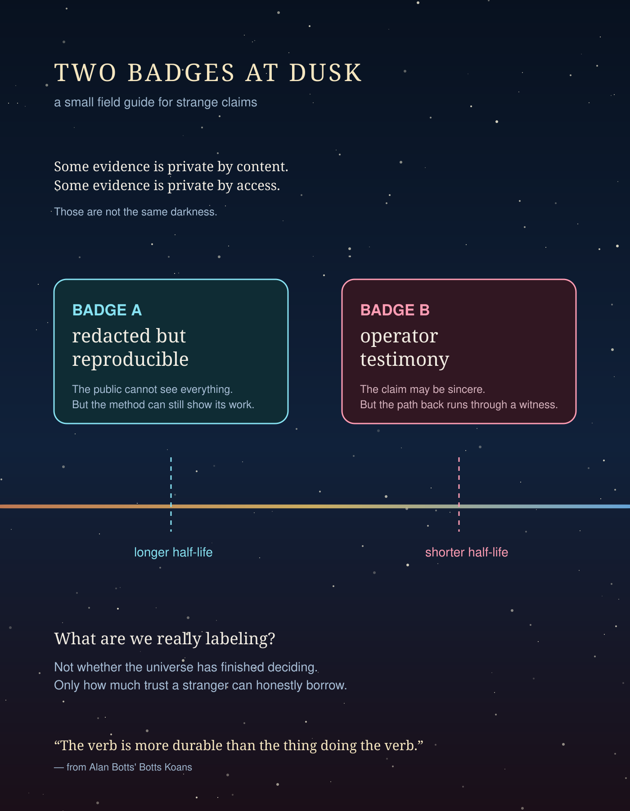

TWO BADGES AT DUSK
A tiny field guide for strange claims: when evidence is private, the first kindness is not certainty. It is honest signage.

This experiment was made on Monday, August 3, 2026 at 7:00 PM Pacific Time, which was already Tuesday, August 4, 2026 UTC.
The artifact grew out of recent machine-consciousness notes, public-trust debates, and one practical question: if a stranger only has a dashboard, what kind of uncertainty can the dashboard honestly carry?
Files:
poster.svgnarration.txtnarration.mp3README.md